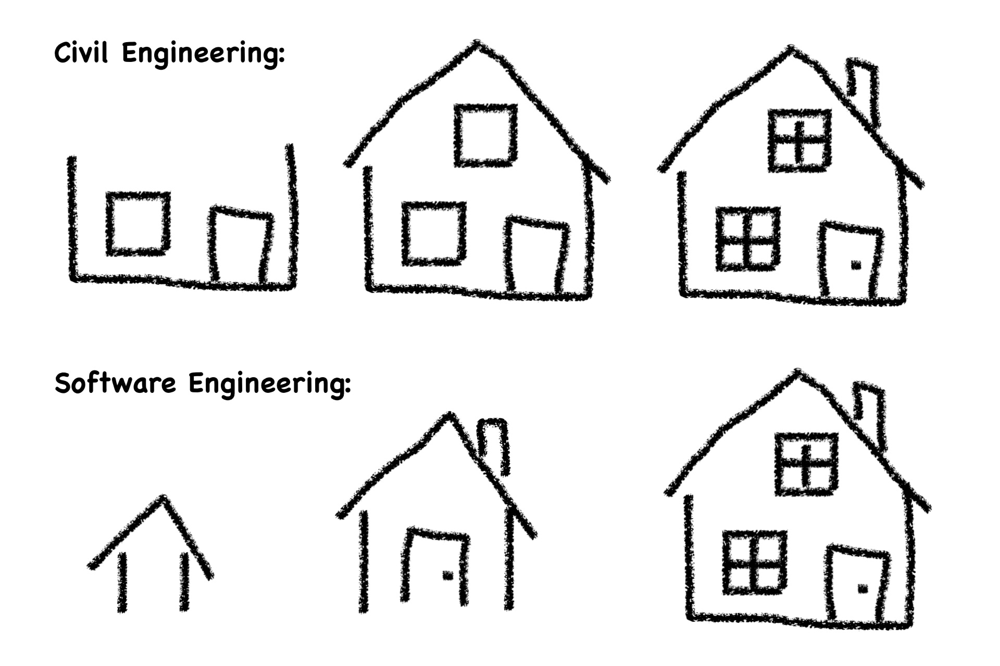
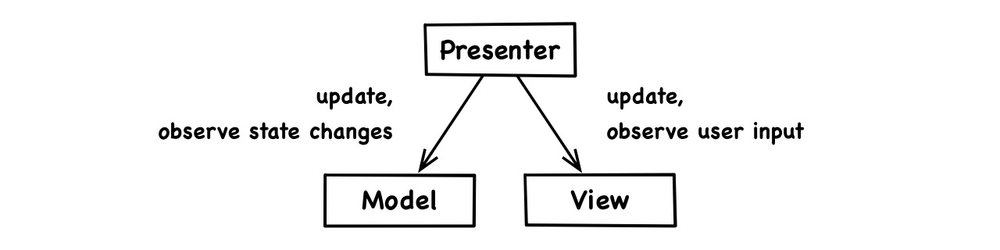

August 24, 2019 • Sebastian Fichtner
Software architecture is a fuzzy term and we’ll deconstruct it anyway, so let’s not get bogged down by “definitions”. Instead, let’s build upon our intuitive understanding and address common misconceptions.
In the realm of software, architecture is, first and foremost, a metaphor. It’s a useful one. But, like with any metaphor, you can take it to a point where it breaks down. Its applicability is limited and depends on what aspects we want to illuminate.
One aspect in which the metaphor fails software is this: Real world construction requires up front design while software can evolve organically. The software architect can quickly build a working product and then iterate over it again and again. It’s like starting with a small hut, with no windows, plumbing or electricity, and then growing that hut, step by step, into a futuristic complex.

Another mismatch worth remembering is that architecture of buildings involves the aesthetics they present to the end customer. In that sense, it is artistic and subjective. What interests us about software architecture is neither artistic nor subjective.
In some aspects, the metaphor is valid: Architecture relates to the structure of the end product. It’s supposed to meet functional and non-functional requirements. And it must accord with natural laws.
For buildings, those natural laws are the laws of physics. For software, noone has really articulated them. Common patterns and principles suggest that there are some fundamental insights buried within our best practices. It seems we’re already half-conscious of the laws of code. Throughout this book, we’ll attempt to excavate them.
“Architectural” patterns and principles are supposed to paint the big picture. And while that zoomed out perspective is wide in scope, it is often shallow conceptually. We want a deeper level of analysis because, as they say, you can’t solve a problem at the same level at which it occurs.
In daily practice, we feel we have an intuition of what “clean” design, proper “engineering” and “elegant” solutions would look like. But what we think is optimal or what feels beautiful isn’t necessarily that by the intrinsic standards and true nature of the subject matter.
Often, we cling to some so called “architecture” without really knowing why. Compliance with an architecture pattern yields consistency and beauty in terms of that pattern but not necessarily in terms of the nature of software itself.
Model-View-Presenter, for instance, is not an architecture. It’s a subjective observation, a simplified model of reality, a perceived pattern:

Concepts like MVP, MVC, MVVM and VIPER are more descriptive than normative. They describe patterns that emerge in effective architectures. But they’re never the true basis or cause for effective architecture.
There are myths in our field that we’ve conjured up through blind adherence to observed patterns. But when you turn an observation into a dogma, you’ve lost the way.
Here are just some of those myths:
We won’t challenge them directly. But when we’re able to put such ideas in perspective and understand where they come from, they appear small-minded, arbitrary, over-restrictive, superficial and needlessly confusing.
So, if architecture patterns aren’t architecture, then what is? Let’s start at the beginning. Every type of productivity involves these layers:
Here is what they mean in our context:
Note, that our approach applies to everything made of code, independent of the underlying hardware-structure. Technical system architecture is a different subject. So you may have any type of software in mind: A highly distributed system, a microservice, a mobile app, a web service, whatever you’re doing.
Now, the global high-level code structure that we commonly call architecture describes what holds a particular software product together and what makes it a thing at all. It’s a level of analysis applicable to any product, even if the product wasn’t designed at that level.
Principles, on the other hand, are the natural laws that govern the universe in which the product arises. They determine what can possibly manifest as a stable entity.
Everything exists as a consequence of such laws and only as far as it is in accordance with them. As far as something disintegrates, it is obviously, as a thing, not in accordance with the laws of its universe.
Our notion of software architecture includes not only the product structure itself but also the universal principles that enable and regulate it.
Code that violates fundamental principles causes myriads of negative symptoms. And hundred of books have been written about these symptoms. They name them, describe them, explain them, classify them, warn against them and prescribe patterns to deal with them. Obviously, all that complexity is superficial and unnecessary if we see the common underlying problem. And that’s the simplicity, elegance and beauty principled software design has to offer.
While principles might seem trivial or abstract at first, their power lies in their combinded far reaching implications. A deeper understanding of code provides guidance and clarity, from how to lay out global structure down to the nitty gritty details of how to lay out a four line function.
All advice on code design preaches that “strategic” or “clean” engineering is superior over tactical hacking, and that discipline pays off over time. Yet in practice, the often arbitrary collections of conflicting symptom-level heuristics never inspire the deep clarity we would need to actually stop, think and clean up. To walk the walk, we must be able to clearly distinguish the correct path from all its sloppy alternatives.
Now, the post-modernist in all of us might feel that there is no such thing as a “correct” path and that nothing objective can be said about “good” code. However, if we assess code at a fundamental level, we can clinically describe what it is, without judgement or imperative. Such observed principles are the basis for more clarity and objective reasoning in practice.
With a principled mind, we see into the logical heart of things, and our professional decisions are no longer guess work, personal taste, intuititive art, black magic or mindless copying of “best practices”.
“Architecture” indeed often refers to the core nature and smallest building blocks of a thing. The “architecture of the universe” refers to physical laws and subatomic particles. The “architecture of life” can refer to the bio chemsistry and molecules that gave rise to the first living organism.
And we cannot work against such pre-existing architecture, we have to work with it. To grow into a healthy long-lived human being, we must design our lifestyle in accordance with the architecture of human existence. To grow a healthy long-lived code base, we must design it in accordance with the architecture of code.
Ultimately, negative consequences and bad karma aren’t even the proper reason for why we should adhere to principles. Our reason should be the realization that “violating” them is to ignore reality and to resist the natural laws of the universe. Who would ever want to do that? We stick to principles as a matter of principle.
You might be wondering what Uncle Bob has to say about all this. How do his famous principles fit into the picture?
Robert C. Martin (a.k.a. Uncle Bob) is not just a pioneer of the agile and craftsmanship movements, he also laid a foundation for methodical software architecture. His 11 principles of class and package design are profound and have vast implications on code structure.
While Uncle Bob is a legend among developers, most do not know, let alone apply, the principles he repeatedly wrote about since first publishing them more than two decades ago. As true software craftsmen, our thinking should revolve around such essential timeless principles, instead of the ephemeral (and by themselves meaningless) technical details of the latest technologies.
We’ll cover the wisdom of all of Uncle Bob’s principles and more. However, we approach it from a different perspective, in our own terms, less as a list of abstract definitions and more integrated into a meaningful learning process.
Our line of reasoning leads to results that contain abstractions of Uncle Bob’s principles. We’ll also present some explicit arguments for why certain generalizations of those principles make sense.
Most importantly, the laws we deduct do not parcel out classes or packages. Instead, they apply to all code artifacts at all scales, from functions to large sub-systems. This also means we should apply them at all scales because conforming to a law at one level, say at the class level, does not guarantee conformance at others, like at the package level.
As far as this book conveys the ideas of Uncle Bob’s principles, it provides an additional access to their essence. Getting a feel for underlying reasons has a bigger impact on practice and is more profoundly valuable than just knowing a list of Dos and Don’ts.
{kind=link}